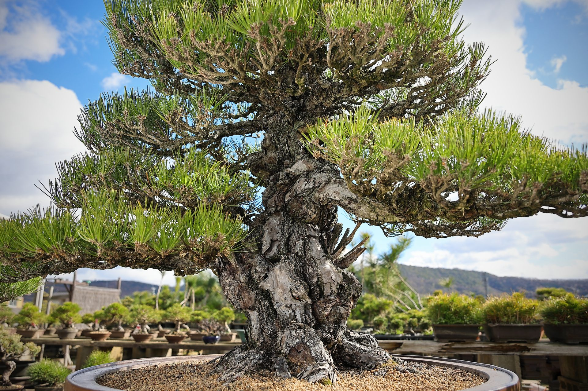
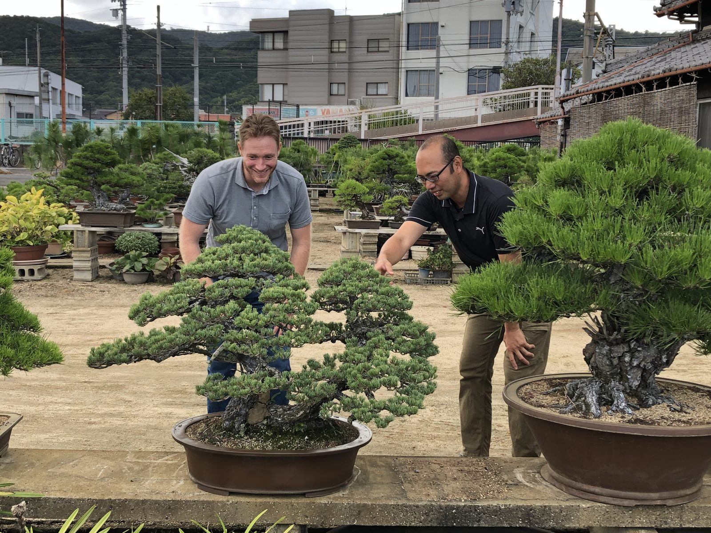
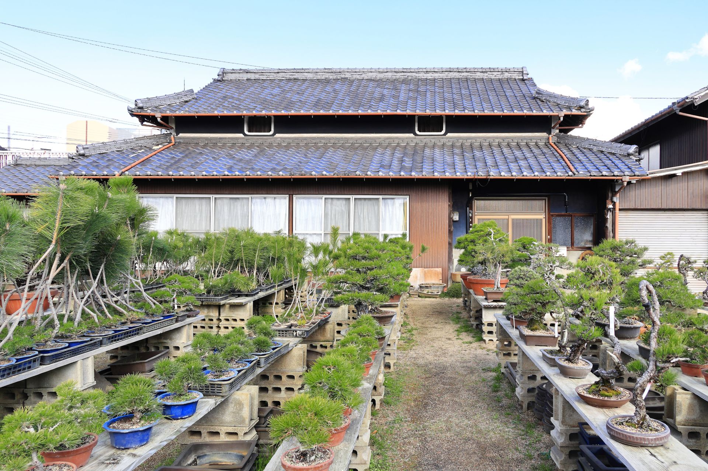
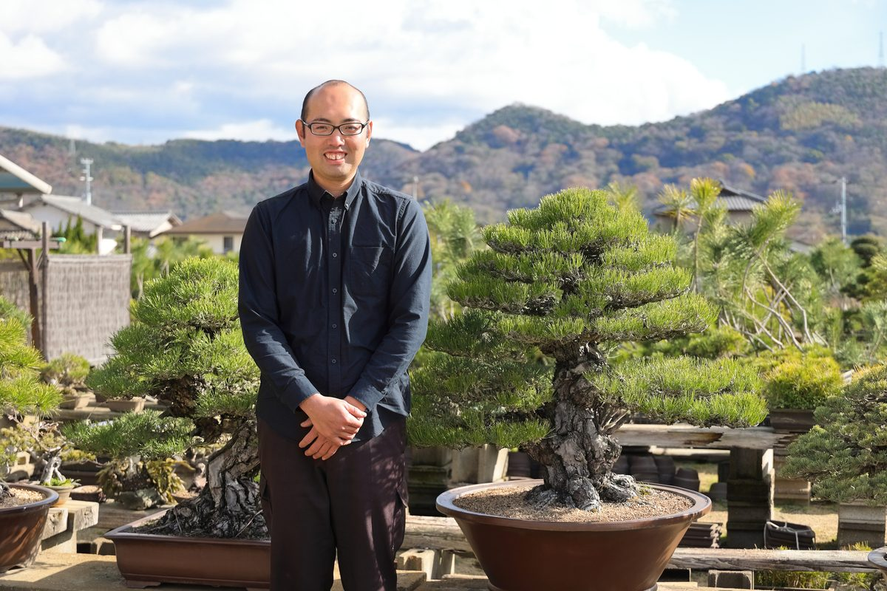

盆栽を上手に育てるための講座ではありません。
良い一鉢を、自分の暮らしに迎える。
その入口となる、高松でしかできない体験です。
壱
幹や枝から、樹が重ねた時間を味わいます。
弐
高松・鬼無で、職人の言葉とともに本物に触れます。
参
小さな一鉢を選び、暮らしへ持ち帰ります。



北谷養盛園 4代目
高松・鬼無で、親子7,000本以上の松盆栽を管理。
四代にわたり受け継がれてきた棚場で、樹と向き合う日々のなかから、一本一本の見どころを言葉にして案内します。
企画：Bonsai Agency 玉井謙二
| 参加費 | 30,000円（税込） |
|---|---|
| 所要時間 | 約2時間 |
| 定員 | 各回2〜4名 |
| 開催頻度 | 月1回（事前予約制） |
| 開催場所 | 高松市鬼無町 北谷養盛園 |
職人による案内、棚場見学、樹の見方の解説、簡単な手入れ体験、
小さな一鉢、30日安心サポートを含みます。
まずは、
樹が刻んだ時間に
触れてみてください。
各回2〜4名｜月1回開催｜事前予約制
※お持ち帰りいただく盆栽は、体験用の小さな一鉢です。
※30日安心サポートは、基本的な管理相談を目的としています。